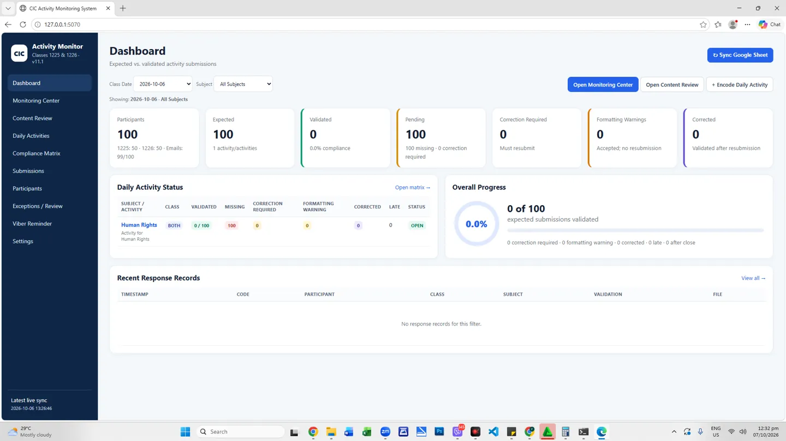

01Monitoring
CIC Activity Monitoring System
A centralized monitoring workspace for class activities, submission validation, compliance status, corrections, participant tracking, and administrative follow-through.
DashboardValidation WorkflowGoogle Sheets Sync